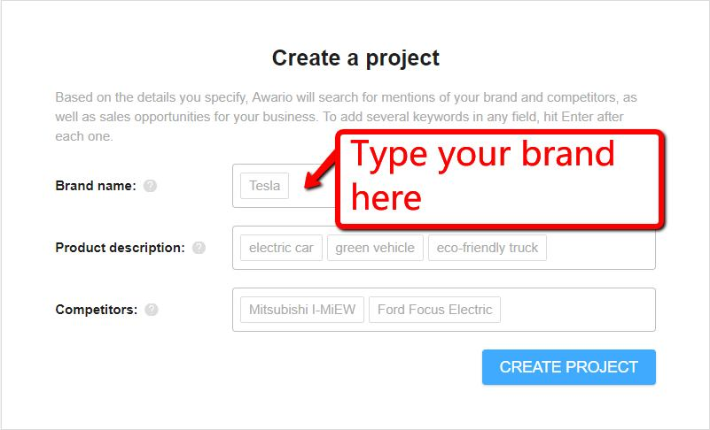
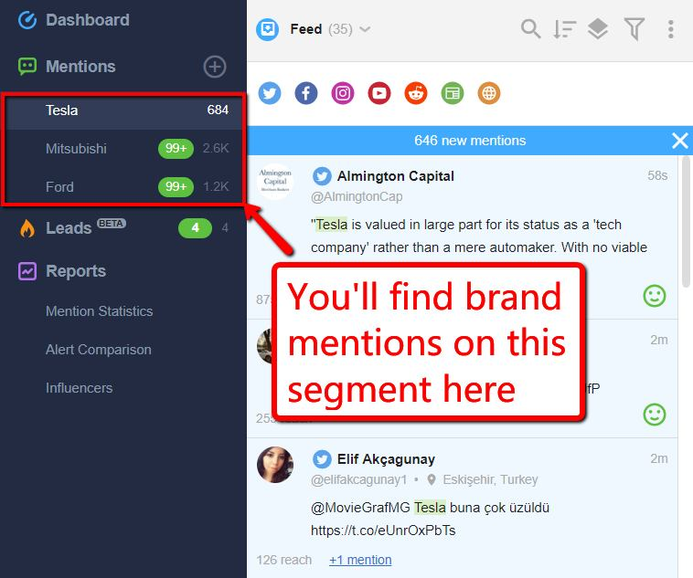

Internet marketers know for a fact that “content is king”. Although there’s a catch: It can’t be just any content.
These days, quantity alone won’t do the trick. You have to think quality as well. Crafting one outstanding piece weighs more than 10 half-baked articles.
Most marketers don’t have enough knowledge or resources to regularly produce solid content.
This is where user-generated content comes in. I’ll explain in this post why you need it and how you can boost UGC to strengthen your following.
Why Do You Need User-Generated Content?
User-generated content (UGC) refers to the content produced by a brand’s customer, follower or visitor. In other words, it’s media leverage for your business generated by word of mouth.
UGC takes many forms – testimonials, customer reviews, blog posts, social media photos, and videos.
These types of content are considered powerful marketing tools because they serve as social proof. Statistics, show that people trust customer reviews 12 times more than a marketing piece.
Majority of consumers also see reviews as an essential part of their purchasing decisions. Fifty percent of customers look for websites that have feedback from other users.
This, my friend, is why you need UGC. You have to let your costumers do the talking because users believe their fellow users.
Ways to Boost UGC to Build a Solid Audience
If you’re planning to maximize UCG in your marketing strategy, it’s best to map out your game plan. Take a look at how you can boost UGC to raise awareness for your brand and build a solid audience.
Feature customer testimonials
Client testimonials are very impactful, so you need to place them on your website strategically. Customers feel that a testimonial is unbiased and genuine if it comes from a real user.
So, what’s the first essential step?
Number one, you have to ask for feedback from your customers. This will help solidify the credibility of your brand.
Reach out to people who’ve already availed of your services or used your products. Let them share the favorable experiences they’ve had with your brand.
The thing here is, you don’t need a hundred testimonials to do wonders for your website. All it takes is three to five powerful feedbacks that are credible, authentic and specific.
An outstanding testimonial meets the following criteria:
- It highlights the best attributes of your brand
- It comes from real people or business (and you have an image and name to back it up)
- It is simple and precise but also impactful
Once you’ve gathered compelling feedbacks, it’s time to make them evident on your website. Ideally, they should be visible on your homepage, although you can dedicate a specific page for them as well.
Keep in mind that if this is the route you’re going for, commenting should be easy for your users. Luckily, that isn’t a problem, provided you have the right plugins.
I recommend using plugins specifically designed for testimonials such as Strong Testimonials in WordPress. This plugin includes a front-end form, custom fields, and star ratings, which your users can easily fill.

Encourage contributions and offer incentives
Another effective strategy to encourage UGC is by offering rewards or incentives. What’s the best way to do that? Run a hashtag contest.
Brands typically encourage users to take a photo of themselves using their product or service. The contestant with the best photo will then win the enticing prize.
If you’re looking to do the same, think Instagram.
Ask your participants to post a photo of themselves while using your product or availing your service. Then, ask them to use a hashtag that’s unique to your campaign (i.e. #mybrandexperience).
If done flawlessly, this strategy will win you two things: social media buzz and UGC. Even better, you can track your campaign’s progress, and skyrocket your brand’s reach.

To stir massive engagement, remember to make your contest relevant to your brand and audience. And of course, choose a platform that best suits the campaign you’re launching.
Publish high-quality content
One of the best ways to strengthen and grow your community is by offering your users value through high-quality content.
I understand that many internet marketers are constantly updating, but it’s a necessary step to improve your content.
In this day and age, everything is searchable on Google. Researches show that experts do it, watch podcasts on YouTube, then put into action what they have learned.
If these things still don’t work, hire someone to do it. Crowdsource. There are so many skilled writers around the world who are more than willing to help you advance your content marketing goals.
But remember: Quality must not only be present in your efforts but in your UGC as well.
Even if you regularly publish valuable content on your site, if your UGC is lacking, it’d be pointless. Source high-quality, valuable UGC that you can publish on your website.
As I’ve mentioned earlier, an enticing testimonial is specific, short and meaningful. This is what you need, so this is what you should encourage.
Use a social media listening tool
More and more businesses are turning to social media to be in tune with their target audience. Thanks to social media listening tools, you can now have easier access to people’s thoughts about your brand.
A great example of a social media listening tool is Awario. This monitoring app crawls into various social media platforms and web pages daily, allowing you to know what people think about your products or services without them knowing that you’re listening.
Simply input your email address onto the homepage and click on the green button to sign up.
Once you’ve signed in, simply fill up the form with the corresponding details. Click the blue button to go to the dashboard and see details regarding your brand.

Aside from monitoring mentions of your brand, you can also listen to what people think about your competitors and industry. Awario also includes other features such as:
- Detection of plagiarized content
- Monitoring of new backlinks
- Predictive insights, which allows you to find people seeking recommendations for products and services like yours

You can use these apps to find out what strong points you must maintain, weak points you need to address, and opportunities you can capitalize on.
Stay transparent and honest
In any marketing approach, there will always be challenges. Although UGC is a cost-effective strategy, it’s not always rainbows and butterflies.
This means, your brand is also subject to trolling and negative feedbacks, among others. In this case, be proactive on what you can improve on and your credibility will eventually discredit trolls.
The best way to handle this scenario is by staying honest and transparent with your users. Address their pain points effectively, and keep your communication lines open.
This will give your brand bonus points for customer service and will serve as a learning curve for your business growth.
Conclusion
If you want to maximize your business’ full potential, you have to tap into user-generated content as well. The social proof it will provide your brand builds authority and credibility, which can drive better engagement and results.
The secret is to build a solid relationship with your customers by making your business open and available for communication. Maximize the tools and platforms available at hand to see your plan in motion.
It’s also important to stay consistent. Do it right, and you won’t have to ask them to share their insights anymore – they’d be glad to initiate.
About the author
Ankit is a professional blogger, affiliate marketer, consultant, trainer, public speaker and founder of MasterBlogging, where he is passionate about helping people generate a full-time income with blogging. You can follow him on twitter at @iAnkitSingla
Sabina says
Ankit I loved this post! It gave me some awesome ideas that I could implement for my clients. Thank you!
Corry says
All these details, like the UGC strategy, are making business great, but we are not aware of their impact until we read articles like this one. Thank You so much for the effort and for explaining us the meaning and importance of these details.
Cameron Barrett says
Offering rewards always help to create user generated content. I remember there was one great campaign when Starbucks was offering great reward for those who won on their competition. Challenge was to create some drawings on Starbucks cup and to post it using #WhiteCupContest hashtag. This was a huge thing few years back.
Crystal says
Always make sure to ask feedback from your customers. This is something that can be useful in many situations. First thing that somebody who is interested in what you are offering is going to check are your testimonials. We always make sure they are visible and appealing on our social networks and website.
Margarita Pollis says
Very nice tricks, so to say, to make our businesses grow each day. All in all, I think that real human behavior, or, real human look like content is the one that we all search for and what we believe.
Hussein says
Although we all use bots for mass marketing we still need a real human touch. We are humans after all 🙂 Thanks for this great article!